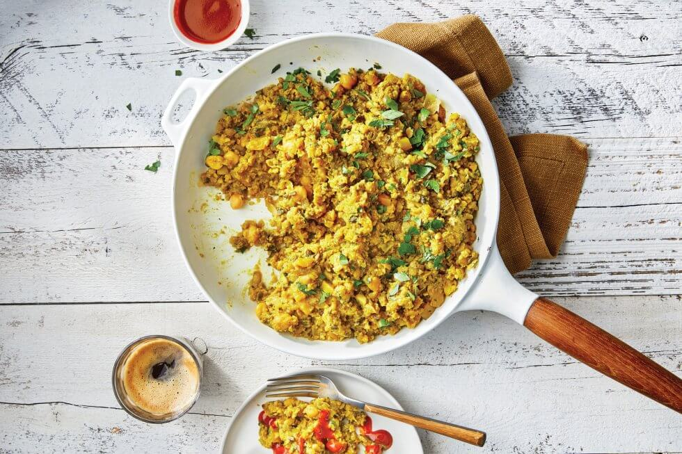

Kikkererwten-bloemkoolscramble

Ingredienten:
- 1 kleine gele ui, gesnipperd
- 1 rode paprika, in repen
- 1 blik (400 g) kikkererwten
- 350 g bloemkool, geraspt
- 225 g paddenstoelen naar keuze, grof gehakt
- 35 g edelgist
- 2½ tl Dr. Gregers speciale specerijenmix
- 2 el peterselie, vers, fijngesneden
- ½ tl kurkuma, gemalen
Bereiding
- Verwarm 60 milliliter water in een grote koekenpan op middelhoge temperatuur. Voeg de ui toe, dek af en smoor tot ze zacht zijn 5 minuten. Voeg de paprika en bloemkool toe, dek af en laat smoren. Roer af en toe tot ze zacht zijn. Roer de champignons, edelgist, dr. Gregers speciale specerijenmix en kurkuma erdoor. Dek af en smoor gedurende 5 minuten.
- Pureer ondertussen de kikkererwten en voeg ze toe aan de koekenpan. Dek weer af en laat 5 minuten smoren tot het goed is verwarmd en alle vloeistof is opgenomen.
- Verdeel de kikkererwten-bloemkoolscramble over de borden, garneer met peterselie en serveer direct.